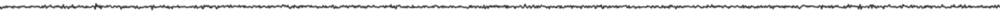
Welcome!
Help yourself and enjoy your stay! ☕
Don't spill it!
Click on a project to quickly learn more
Or alternatively, go to the 'Projects' tab on the left side pannel to see a detailed overview!
Multitaper Spectrogram Implementation in EEG Analysis
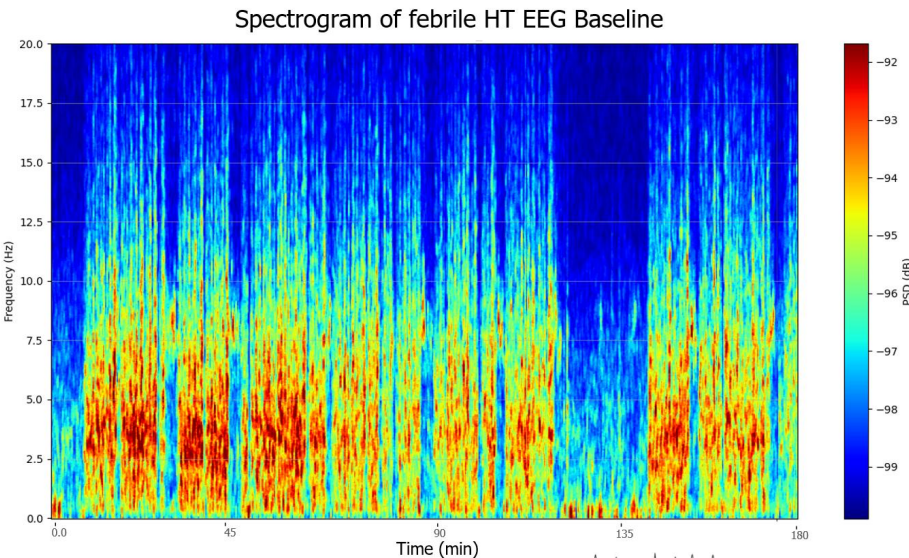
Personal 'DIY' EEG and BCI Passion Project
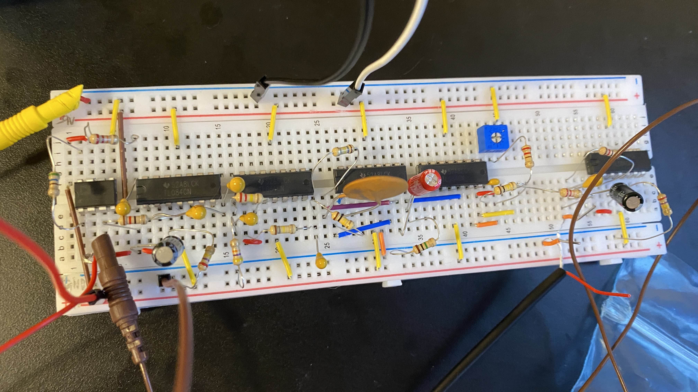
Behavioral Coupling of EEG and Positive Operant Conditioning Task
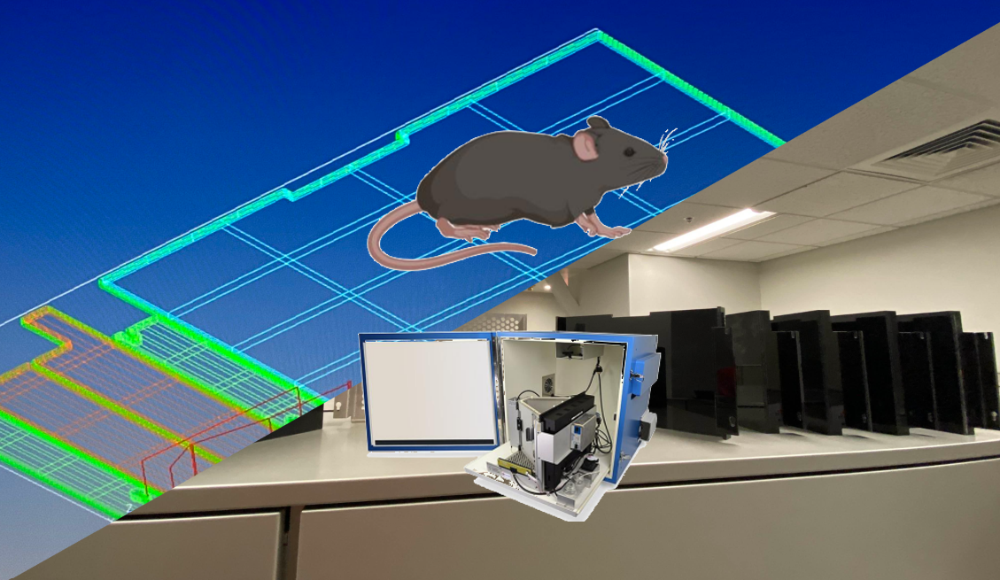
EEG Waveform Lettering GUI
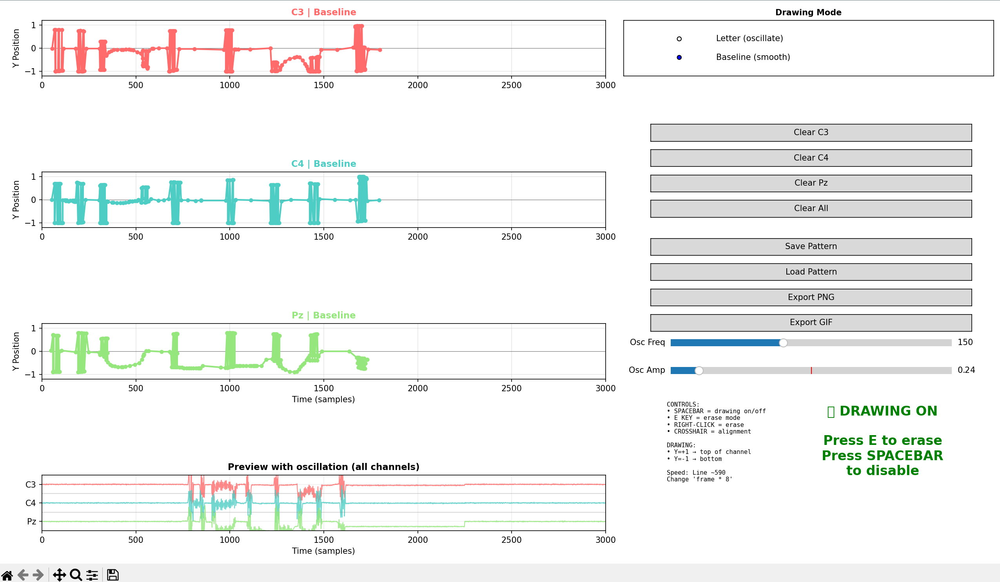

About Me
Welcome! I'm Sean, a junior specialist in neuroscience and biotech enthusiast with a passion for understanding the brain and identfying behavior-associated biomarkers in EEG.
In my current line of work involving several mouse models of neurodevelopmental disorders. I'm heavily involved in experimental design, behavioral experiments, craniotomy and brain surgery procedures, in vivo/in vitro neurophysiology classification, data processing, and manuscript preparation, though I'm mostly known by my lab coworkers as the "computer wizard guy" ¯\_(ツ)_/¯.
I'm also working on a personal project where I'm self-collecting my own personal EEG dataset from an RC circuit EEG device I developed from scratch for the purposes of building a DIY brain-computer interface.
Outside of work, it's easiest to find me at the mountains hiking/rock climbing, or at the beach surfing/fortifying my sand castle. Unless I'm tired, in which case I'm usually at my computer.
Read more about my various projects in the projects section!
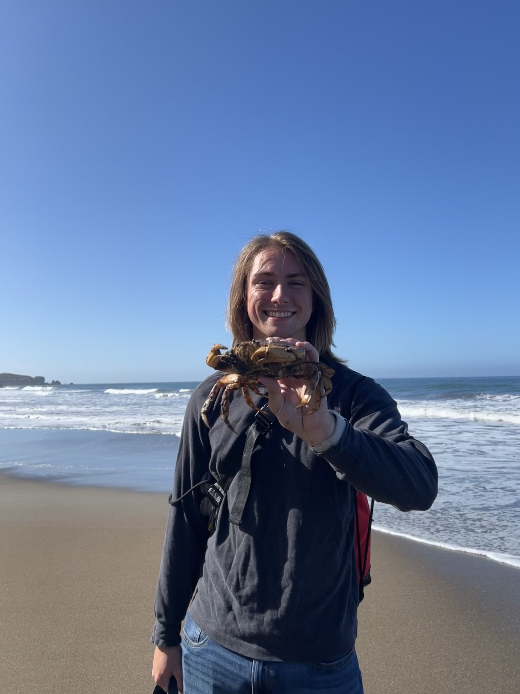

Projects
Multitaper Spectrogram Implementation in EEG Analysis
Developed a user friendly, memory efficient pipeline for analyzing our 3 day EEG recordings in mouse models using spectral analysis. Implemented a chunking feature to process recordings because my system kept crashing when I tried loading our longer EEG recordings via a wrapper for Prerau lab's multitaper spectrogram python script. I also enabled batch processing capabilities because manually analyzing files is never fun.
Personal 'DIY' EEG and BCI Passion Project
All about my personal homemade EEG and BCI device! Following online documentation, I built and troubleshooted/began improving an analogue wet-electrode wearable EEG prototype to enable myself to begin collecting my own data sets frombehavioral training sessions. Currently, I'm in the late stages of validating signal acquisition in analogue and optimizing signal to noise ratio and beginning data set collection.
Behavioral Coupling of EEG and Positive Operant Conditioning Task
All about a Silverman lab work project overcoming historical hurdles for implementing wireless EEG behavioral assays in a touchscreen learning task. Includes information spanning from my prototyping and production of a non-shielding behavioral enclosure, identification of ideal wiring layouts for cross-system interaction, and directions for near-future experimental plans.
EEG Waveform Lettering GUI
A fun side project that was used to make all the section headers on each page! The current approach has 3 rows/"channels" to mock-imitate an EEG channel layout. A semi-optimal approach I found was to divide letters into a 3 row system and manually draw the respective channel's letter "contributions" to give the illusion of lettering.
Publications
The following publications list were drafting by my PI, Dr. Jill Silverman, and I regarding the various projects I've been involved in during my time working at the lab! Many are currently in their mid to late stages of completion, though we envision publications within the next year.
Translational Outcomes in a Novel Variant Mouse Model G288S of KCNT1-Related Epilepsy.
BioRxiv https://doi.org/10.1101/2025.07.22.666003
Aberrant in vivo neurophysiological outcomes and in vitro electrophysiological neuronal indices in preclinical models of KCNT1-Related Epilepsy.
Electrophysiological Biomarkers during Positive Operant Behavioral Assessment in preclinical models of KCNT1-Related Epilepsy.
Leveraging Sensory Evoked Potentials as a Translational Biomarker in Preclinical Genetic Models of Neurodevelopmental Disorders.
Loss of CDKL5 produces hyperexcitable neurophysiological signatures, dysfunctional quality and quantity of sleep and aberrant imagining by magnetic resonance.
Neurophysiological biomarkers of aberrant gait dimensions: Leveraging time synchronous cortical EEG and function dimensions to cortical inform platform provide translational biomarkers in genetic neurodevelopmental disorders.
A novel model of Ube3a overexpression provides interstitial and isodicentric preclinical models of Dup15q Syndrome by disease relevant behavior and neurophysiological phenotypes: An essential tool for Dup15q Syndrome Therapeutic Development.
Multitaper Spectrogram Implementation
Developed a user friendly, memory efficient pipeline for analyzing our 3 day EEG recordings in mouse models using spectral analysis. Implemented a chunking feature to process recordings because my system kept crashing when I tried loading our longer EEG recordings via a wrapper for Prerau lab's multitaper spectrogram python script. I also enabled batch processing capabilities because manually analyzing files is never fun.
Background & Motivation
Long-duration EEG recordings from telemetry-implanted mice are important for tracking baseline spiking dynamics and sleep-stage classification in the Silverman Lab. I implemented a wrapper for the Prerau lab's multitaper implementation (prerau.bwh.harvard.edu), but I ran into difficulties processing larger 72 hour recordings due to memory constraints on my system, limiting analysis to shorter EEG recordings we collected in other behavioral experiments. It was still handy for visualizing epileptic progression in our seizure prone lines, but much of the Prerau's lab highlighted use case was in human sleep assessment, so I wanted to be able to at least also replicate the functional capabilities in our longer recordings we perform.
Approach & Methods
The bulk of the analysis work still lies in the Prerau lab's multitaper spectrogram engine, though I made three key changes in the "pipeline":
- Chunked processing bins: Instead of trying to preload the entire file, I opted to load 1 hour segments using lazy file loading which I would then "stitch" back together. So far, this implementation has worked, evident by the drastic reduction in crashes my computer experieces while I analyze files (100% -> 0%!)
- Power normalization feature: I also added a relative power conversion (calculated as a percentage of total power) alongside Prerau's absolute power, something I hope to use later down the line for standardizing a cross-subject comparison of total spectral power. I should note though that a limitation with this approach is that higher frequencies tend to wash out a lot as they tend to have lower power contributions than the lower frequencies in the same animal.
- Batch processing and customizable parameters via a GUI: I also like conveniece, and a big goal was to make the platform usable by all the members of our lab. So, I allowed easy user input for the various mutlitaper parameters Prerau and co. highlight in their paper. I also added simple file discovery and error logging.
Results & Findings
The new pipeline successfully processes multi-day recordings that previously gave my computer a headache, primarily via aggressive garbage collection after chunks were finished with analysis to maintain manageable memory usage. The results seem pretty promising, as Prerau's higher resolution spectrograms reveal frequency dynamics during sleep stage events that are hard to notice in traditional EEG waveform. I'm currently working on rediving into literature to find any other documented trends in mouse EEG for easy sleep stage identification and any other behaviors I can pair with EEG.
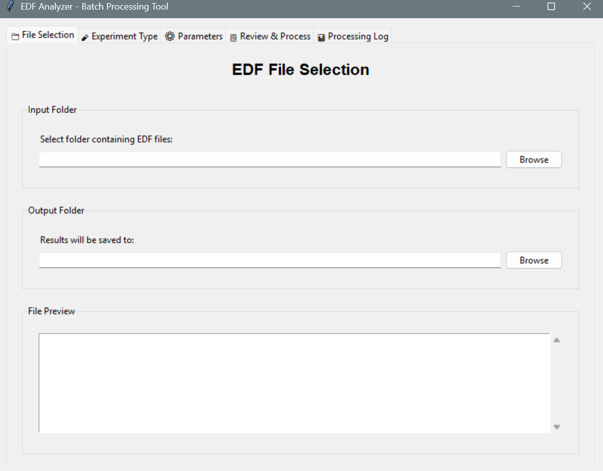
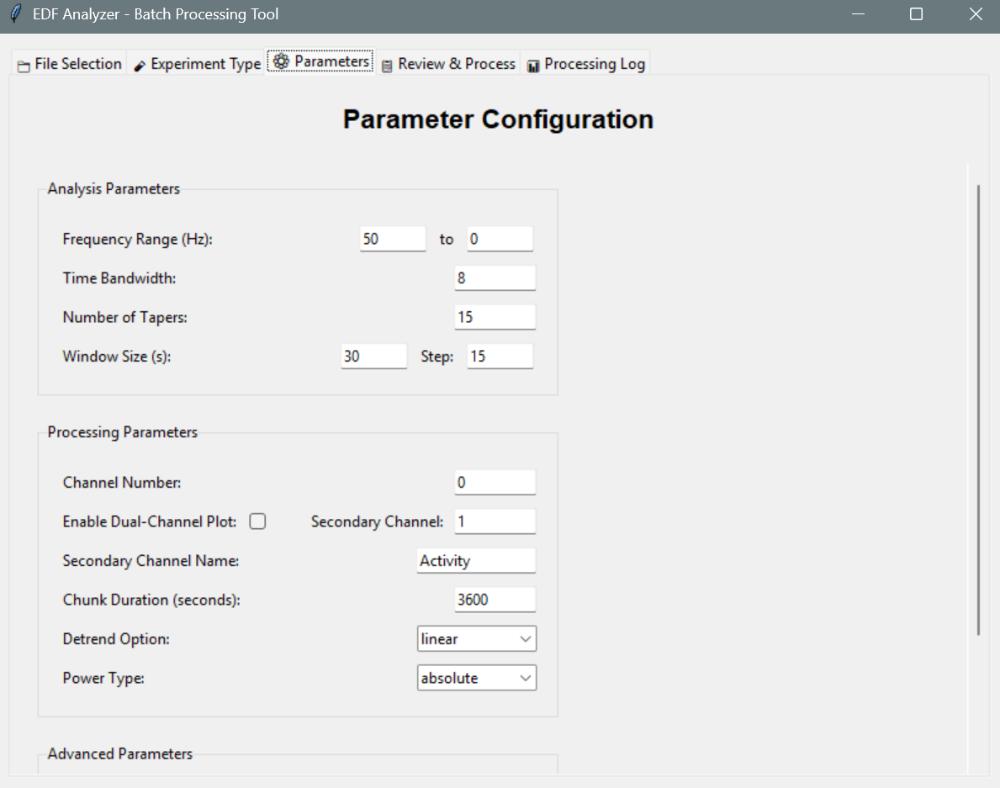
To Do
Fix scaling of selected second generated EDF channel.
Add AEP/fVEP ERP analysis scripts as additional tabs at the top of the GUI
Allow for Event Related Spectral Perturbation figure generation for the evoked potentials experiments.
Homemade EEG and BCI Personal Project
I am currently in the early-mid stages of a passion project where I'm building a real-time brain-computer interface to detect motor imagery (imagined muscle clenching) from single-channel EEG recordings on myself to translate my EEG signals into keyboard commands in real time.
Background & Motivation
Hobbyist BCI toolkits can be costly, especially for someone with my current budget, limiting my accessibility for personal education and experimentation. I found that there was some online documentation (found here) for RC circuit enthusiasts that illustrated the necessary components needed to make your own homemade EEG setup off of a breadboard, resistors/capacitors, and some select ICs, running me about $40 total in raw supply costs. I particularly liked this approach as it additionally included instructions for several critical analogue noise filtering stages at 60Hz notch filtering, 31Hz LFP, 1HZ HPF while also cleverly utilizing the computer's mic-in port and soundcard as a final-stage ADC. There were some problems I found with the guide, notably that the visual pinout of the breadboard was incorrect so I had to refer to the circuit logic layout. In fact, the op-amp diagrams on the raw circuit weren't fully labeled, either, so I had to go to the datasheets to figure out the full pin layouts and specificiations, though both hurdles were fun obstacles that didn't prove to be too challenging. The ultimate goal was to utilize this as a recording data acquisition platform to allow me to self-experiment functional motor imagery detection tasks, akin to the sensory evoked potentials experiments we conduct in the Silverman Lab!
Most of all, I've had a long-standing interest in prosthetic devices and body/brain/machine interfaces, and I thought it'd be fulfilling to begin personal work in this domain as a passion project. Plus, I think it'd be pretty fun to beat my friends in games we play together while hooked up to my whole device.
Technical Implementation
As per the enthusiast guide, I utilized the medical grade instrumentation amplifier AD620 where I take in the two inputs from 2 electrodes and compute the difference between them, amplified by a controllable gain multiplier dependent on the resistence between pins 1 and 8. The next 6 main stages are comrpised of the 60Hz notch filter (to reduce electrical noise), a 7Hz high pass filter, a 31Hz low pass filter, a 1Hz high pass filter, a necessary gain stage to improve signal to noise ratio, and one last 60Hz notch filter via operational amplifiers (TL0884CN). It's not described in the guide, but I did some further digging on how this phenomenom arose, and it was actually really interesting. Since capacitors are capable of storing a charge (the degree of which is dependent on it's specifications), wiring either end of the capacitor in the same circuit allows for interesting oscilitory activity of the signal, which, when the correct parameters are selected, allows you to selectively wash out (or amplify!) specific frequencies of interest. From there, in order to standardize electrode placement during the experiment, I built my own 1 channel 2 electrode EEG cap with some hot glue, electric tape, and a ski mask :)
Hardware aside, I then developed four simple Python modules to make a complete BCI pipeline, namely a validation real-time visualization (of the activity and time-domain + FFT) using circular buffering of the mic in EEG data to verify circuit quality. I produced my own psychology behavioral task using PsychoPy (on an unfortunately older Python version) to present pseudo-randomized visual cues to myself (trials such as "CLENCH" vs "REST") with synchronized 3-second EEG recordings, collecting 80 trials per session with variable inter-trial intervals.
Then, I preprocess my collected data: I downsample from 48 kHz (mic in sampling rate) to 250 Hz, apply a bandpass within 8-30 Hz to further scrub the noise in parallel with the analogue filtering stages, and then feed my dataset to train a logistic regression ML model in scikit learn. Lastly, it's just a matter of screening my live-data feed from my mic continuously at 1 second EEG windows before triggering my selected keyboard output based on my motor imagery state.
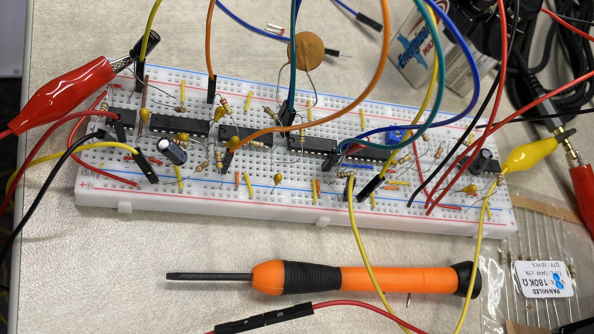
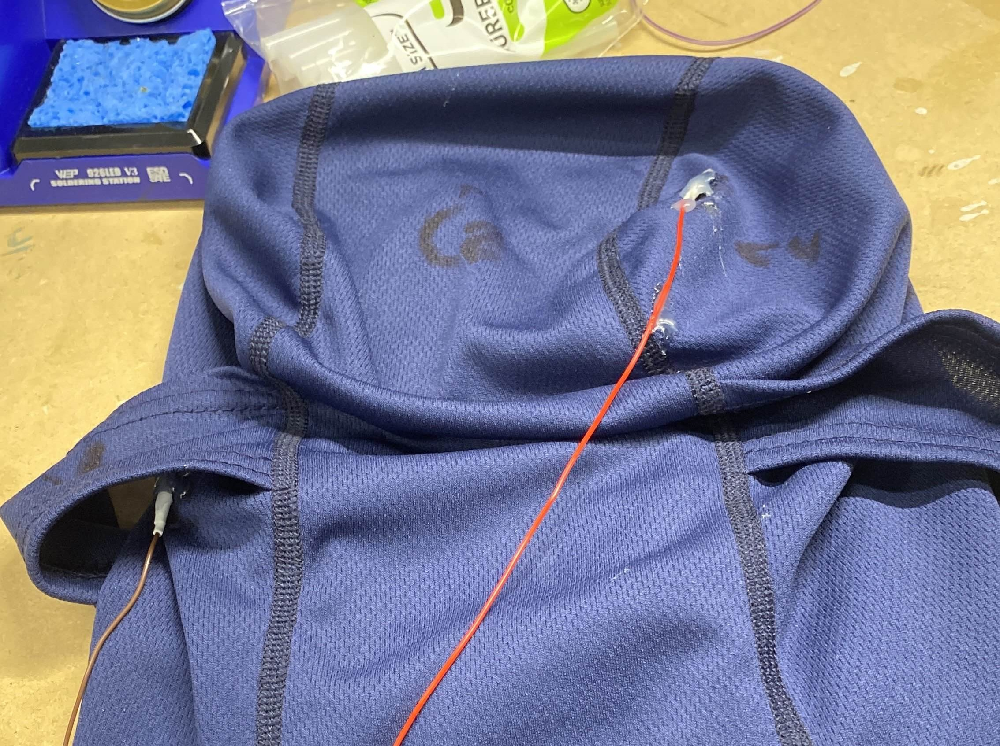
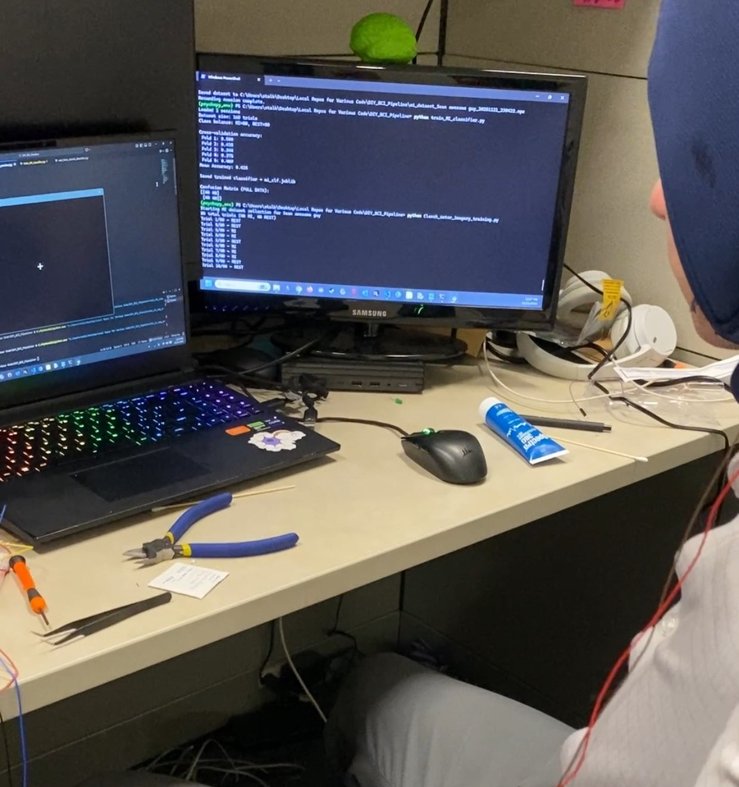
Results & Performance
With some iniial success, I've begun ML model training from signal acquisition through real-time signal screening. It seems my current approach is able to distinguish my MI with approximately 65% confidence, which isn't a whole lot better than a coinflip, but it's a start! The current main next-step problems to tackle is signal to noise ratio and undertrained models. The system as a whole obviously has a lot of limitations, but I'm in the middle of ironing the issues out. Notably, it seems like the ski mask, while not a bad idea on paper, could use some tweaks to be more effective in seating the electrodes to my head. I cut windows alongside the electrode sites to more easily move my long flowing locks of hair out of the way, and seat the electrodes with conductive electrode gel, but the electrodes are still somewhat prone to dislodging and introduce noise. It's additionally hard to verify the signal's waveform during experimentation, as I want minimal disturbances in my field of vision to not distract me from my behavioral task, so I can't display my waveform visualizer on my second monitor, either. I'm thinking of adding an adjustable (non-conductive) strap along the same plane that the 2 electrodes are in to ensure both electrodes are good tight fits.
I also want to revisit the analogue filtering stages to validate that the math is good on the chosen capacitors/resistors and would result in ideal frequency washout. Lastly, then it's just a matter of confirming a binary clench / non-clench motor imagery differentiation can occur in real-time, then I can proceed with individual finger MI tasks for finer keyboard input control.
To Do
Main item is to improve current signal to noise ratio in my 1 recording electrode set up and distinguish binary MI states on my left hand.
Next, I'd like to implement more electrodes. I have an additional AD620 chip which would double(!) the amount of recording electrodes I can read from. On a more serious note, they are pretty cheap compared to a commercially available EEG headset and don't take long to ship. Having more recording electrodes would definitely improve the robustness of my ML training sessions, improving confidence metrics and likely allowing for further specificity in the MI tasks I can train for/decode.
A lot of this project is seeing how far I can get despite the resource limitations I have working against myself. A big player in my signal to noise problems could also my sound card, so working around it via analogue to USB via my own ADC setup could be an avenue, though it's a "push comes to shove" solution if possible.
Behavioral Coupling of EEG and Positive Operant Conditioning Task
All about a Silverman lab work project overcoming historical hurdles for implementing wireless EEG behavioral assays in a touchscreen learning task. Here I prototyped and produced a non-shielding behavioral experiment platform, identified ideal wiring layouts for our touchscreen and EEG system interaction, and I'll go over some next-step directions for an upcoming near-future experimental plans.
Overview and Problem Items
In our lab, we utilize Lafayette Instrument's Bussey-Saksida Touch Screen Chambers (or the ABET II touchscreen chambers) for highly customizable positive operant conditioning tasks in our mouse models, though there have been historical difficulties prior to my enrollment in the Silverman lab in successfully integrating our main EEG acquisition platforms in DSI with the third party touch screen system for three primary reasons:
- Shielding Experimental Environment: The ABET II behavioral chambers were machined from metal, serving as large shielding factors that denied signal transmission from our wireless EEG telemer in the mice with the external receiver, washing out the signal entirely.
- Digital IO Setup Conditions: The experimental chambers are highly customizable and designed to be easily programmable, though require an additional PCI card to be installed correctly for the Lafayette system to be able to digitally output experiment items of interest in real time.
- Wiring Layout with Correct Grounding: The last and most important hurdle is wiring the digital output lines from the PCI card to the DSI EEG system.
Results and Learnings
I produced effective workarounds to all three problem items:
- Shielding Experimental Environment: Replace metal experiment platforms with acrylic, allowing signal to transfer across the material with low signal impedance. An additional benefit to this is they now match our other behavioral chambers in material and are easy to reproduce. For this stage, I shadowed my father who is a prototype engineer and got experience in designing/manufacturing parts material parts. Main parts were designed in SolidWorks via .STEP file, and seperated into individual parts for CNC machining in .dxf file format with accomanying gcode for fabrication. Then, I handled CNC machining operations, part preperation (deburring, scoring attachment points), and assembled final product with Acrylic Weld On (solvent bonding of material) at 90 deg. Final parts match factory metal platforms and fit in behavioral chambers with the added benefit of low EEG impedence and easier cleaning!
- Digital IO Setup Conditions: The highly customizable Abet II system allowed me to modify our behavioral task to include an additional digital output line depending on the animal's performance in the chamber. To reduce the amount of wired connections (and therefore troubleshooting) between our Touchscreen and EEG systems, I instead chose to have each behavioral measure of interest produce a stereotyped TTL pulse. For example, correct animal trials produced one square TTL pulse of 500ms duration, whereas incorrect trials would be accompanied by 3 shorter pulses. Animal reward collection would produce 2 TTL pulses. The result would be an additional "touchscreen metrics" channel in our EEG system, where EEG signatures could be assessed alongside performance and behavioral metrics, akin to our evoked potentials experiments we perform.
- Wiring Layout with Correct Grounding: The last hurdle was successfully resolved by stripping a BNC coaxial wire to uncover the positive signal wire and grounding wires. Lafayette provides a TTL breakbox connector to our PCI card for digital output lines, though lacks any additional manual or guidance without a rather hefty price tag. Funnily enough, it was my work in my DIY EEG and BCI I've been developing on the side as a passion project that provided the necessary insights for resolving the wiring issue. It was simply a matter of correctly programming the digital output line to go to an individual breakbox channel for a given chamber, and then routing the positive signal and ground wires to that. There, the other BNC end routes into the DSI system painlessly.
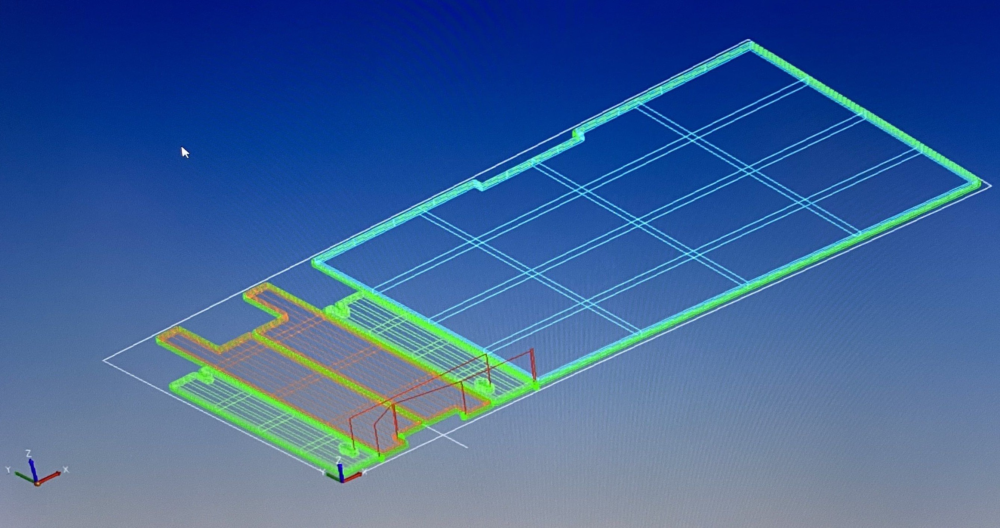
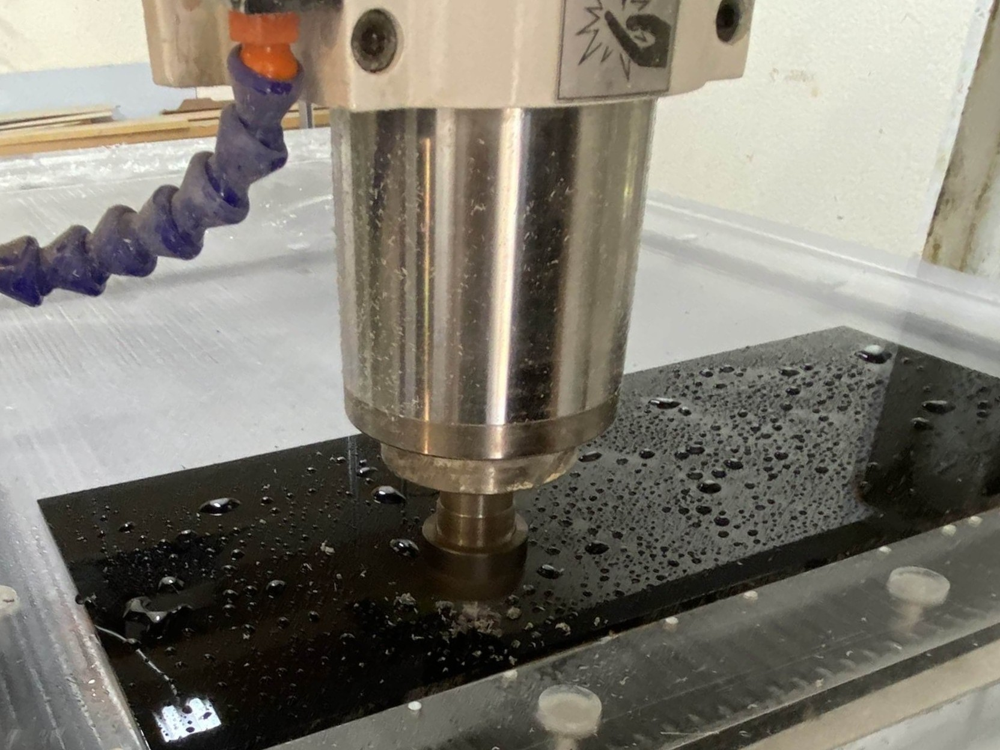
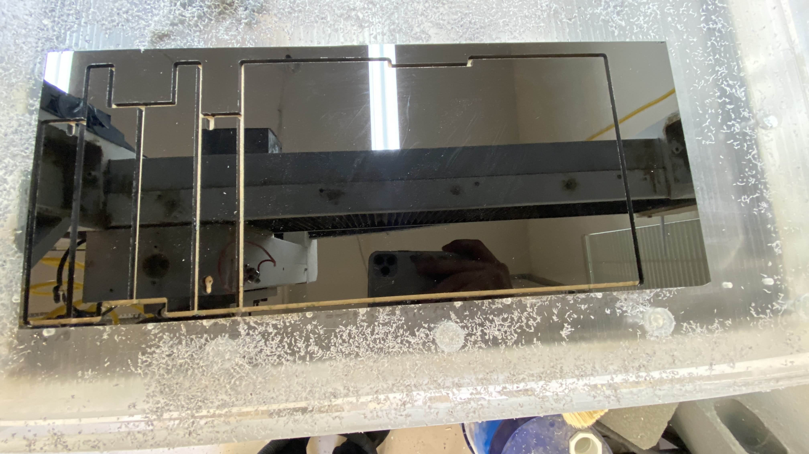
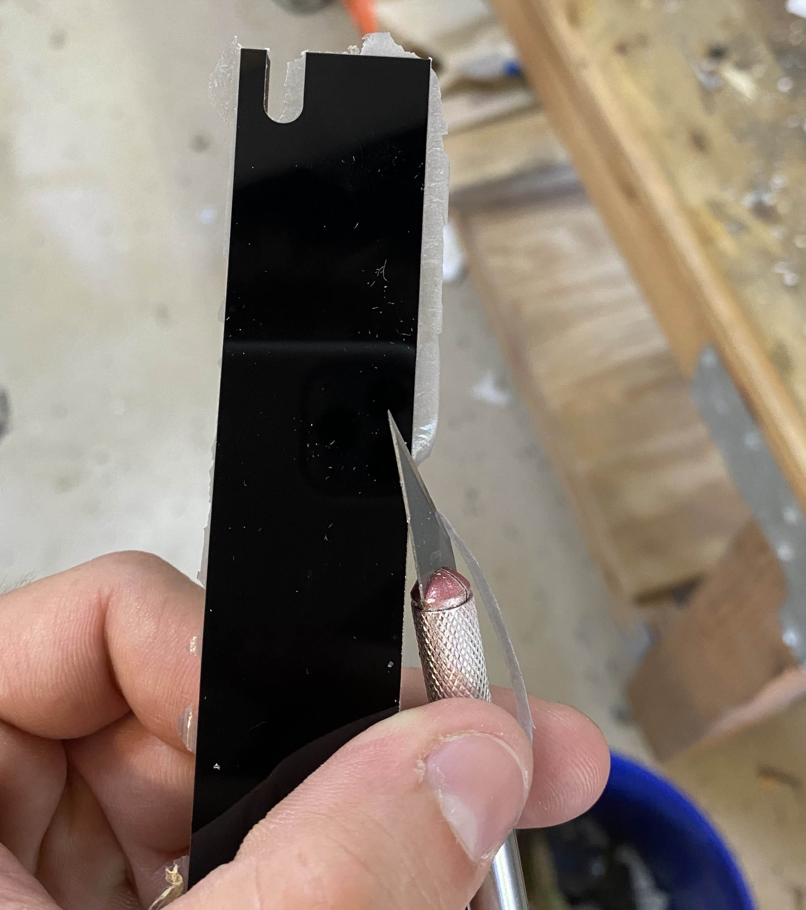
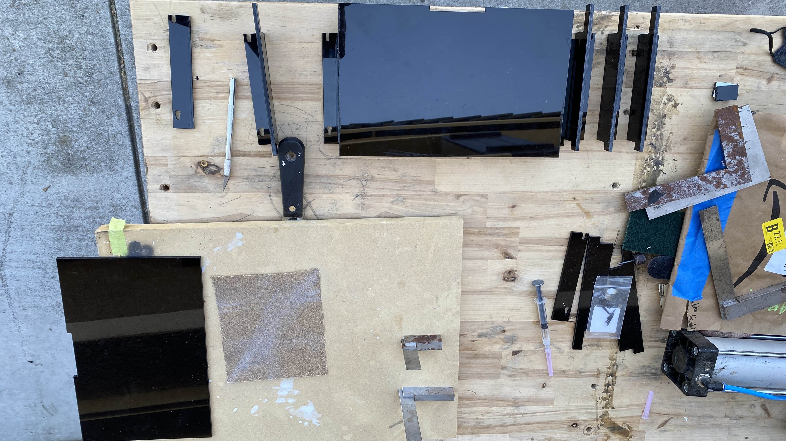
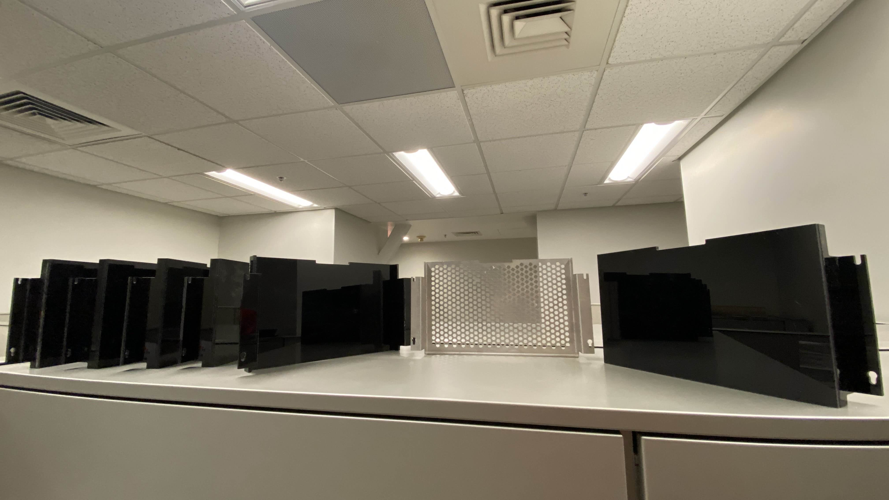
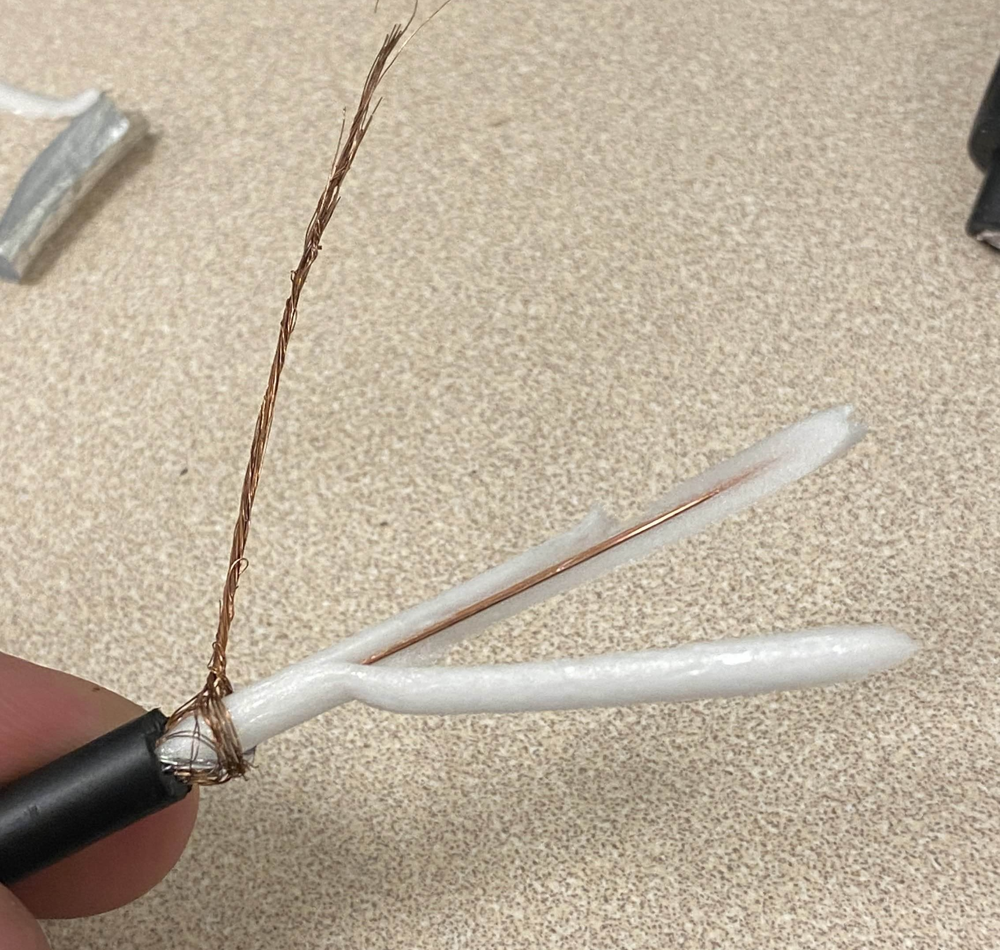
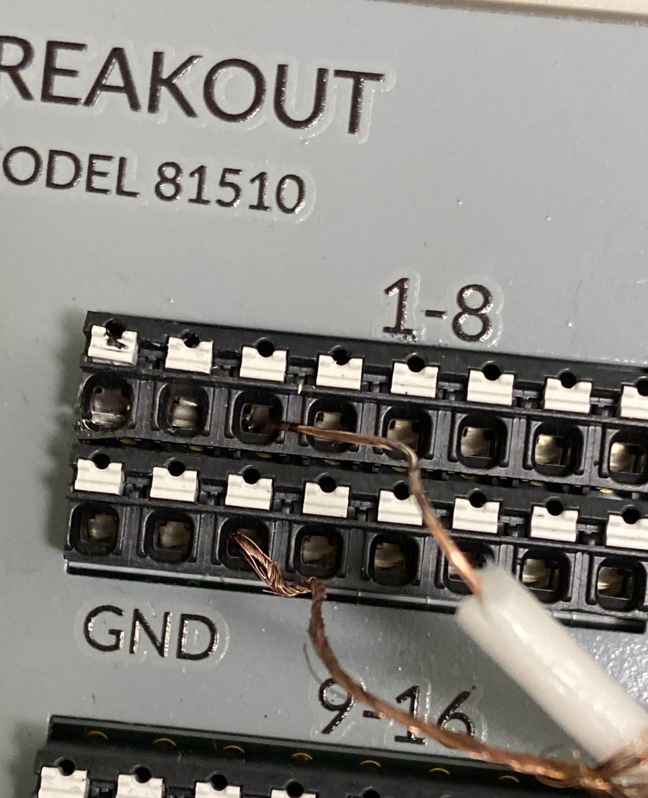
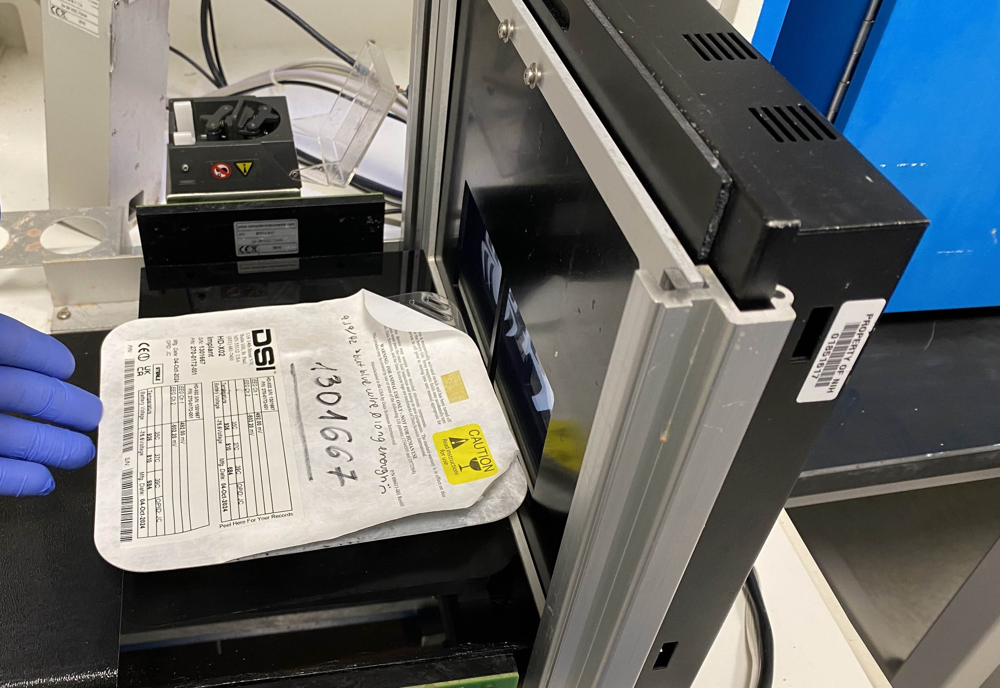
Next Steps
After resolving all the issues and getting this behavioral avenue up and running, we have plans in early 2026 to begin a touchscreen EEG cohort. Just like our evoked potentials metrics, I propose a new behavioral measure called "Behavioral Evoked Potentials", which would identify the event related EEG waveform potential with respect to a behavioral metric of interest (e.g. if the animal gets the trial correct, trial incorrect, collects the strawberry milkshake reward, etc.), allowing us to oberserve the evolution in the waveform trends over time as the animal learns the task.
EEG Waveform Lettering GUI
A fun side project and tool that I made to make all the section headers on each page that hopefully caught your attention! The current approach works by sectioning a word into 3 rows/"channels" to mock-imitate an EEG channel layout. Initially, I was considering automating the generated output based on a user text input, and then using an edge detection algorithm such as OpenCV to segment letters to identify when each respective channel would need to "contribute" erratic wave activity to produce the illusion of a complete letter, but I was on a time-crunch with my other projects and work, so I opted instead a workaround that let me manually draw the respective channel's letter "contributions" and then stitch all the channels together in a final output. It's a bit messy and took some getting used to, but if it works, it works!
How It Works
The tool presents three independent drawing canvases representing mock EEG channels. I added options for toggling drawing mode with hotkeys to go between a "baseline" EEG recording and "activity" based EEG signaling. The tool makes the waveform from sinusoidal oscillations with adjustable frequencies and amplitudes. It's a silly workaround, but the trick is really trying to strategically place the high-amplitude oscillations in each channel at the right horizontal positions so that when all three are vertically stacked, the combined waveforms visually spell out letters. To help with this, I added a crosshair that shows across all three channels to help align them. For example, to draw an "M", the top and bottom channels contribute the outer peaks while the middle channel fills the central "V" shapped valley.
Technical Implementation
Built entirely with Matplotlib's interactive widgets and mouse event callbacks (button_press_event, motion_notify_event) to capture freehand drawing. Points are stored as coordinate tuples with a boolean flag indicating letter and baseline modes. I also added an interpolation engine to help smooth my bad mouse handwriting input into continuous paths.
The preview panel aggregates all three channels in real-time, offsetting each by 1 unit vertically to allow the different channels to stich together as seemlessly as I could. I impleented export functions to make PNGs and animated GIFs using Matplotlib's PillowWriter module.
Design Challenges & Workarounds
The original vision involved OpenCV edge detection to automatically decompose letters into channel contributions, though time constraints derailed this, but manual drawing proved way more effective once muscle memory developed for common letter patterns. The trickiest part was honestly figuring out how I can stitch together vertical letter elements without there being sloppy gaps (as it's all just generated with a waveform). I found that it's most effective to have a "rectangular" waveform region where the wave quickly jumps between the tops and bottoms of the vertical letter element with pulldowns to baseline activity that flank either space to cleanly represent the letter column.
There is also a save/load system using JSON to preserve design sessions that stores all points and oscillation parameters for later adjustment.
Future Improvements
The automated edge detection in OpenCV approach remains appealing for a future version, so I might revisit this at a later point, as I feel the letter waveforms are a novel graphical element I hadn't seen elsewhere.
Project Title 5
Detailed overview of project 5. Replace with the actual content.
Section 1
Add your content here.
Section 2
Add more details about the project.
Section 3
Continue describing work and findings.